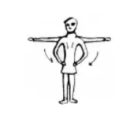

Rune Grimoire
Nauthiz
Modern Relevance
Nauthiz is the rune of need, responsibility, and reckoning. It requires perseverance to shoulder burdens and examine what is lacking. Necessary things are often difficult to bear.
Tree, Element, and Deity
Tree: beech/rowan
Element: fire
Deity: Skuld
Meaning: necessity
Names Across Dialects
| Dialect | Word | Meaning |
|---|---|---|
| Proto-Germanic | naudhiz | Need, fatalistic compulsion |
| Gothic | nauths | Necessity, need |
| Old English | nýd | Need, distress |
| Old Norse | naudhr | Distress, need, constraint |
| Icelandic | Nauð | Need, distress |
| Norwegian | Naudr, Naud | Need, distress |
Phonetic value: n
Esoteric interpretation: need-fire and deliverance from distress
Ideographic interpretation: the bore and the bow that turns it to kindle the need-fire
The Cosmic Force of Resistance
Naudhiz is the cosmic force used by the powers that form the fates of humankind and the world. The N-rune does not represent ørlög itself; rather it embodies a cosmic force necessary to its formulation: that of resistance. It is a synthesis of an implicit thesis and antithesis expressed throughout the rune row.
Naudhiz is a two-pronged concept. It contains the idea of distress but also deliverance from that distress. The Old English Rune Poem captures this duality: "Need constricts the heart, though to the bairns of men it often becomes help and health nevertheless, if they heed it in time."
The Need-Fire
The N-rune is the self-created fire, the need-fire, created by friction and resistance to serve the needs of humankind in material as well as spiritual realms. Naudhiz is will-directed action, with knowledge and wisdom, which may act as a counterforce to the often negative powers of ørlög. The essential teaching: use thy destiny, do not strive against it.
Stepping-Forth-Into-Manifestation
Naudhiz also represents the concept of stepping-forth-into-manifestation. This idea originated with the creation of the Nornir. At that time resistance was born in the universe, laws of causality went into action, and the seeds of the "destruction" of the world of the gods were sown. This must not be understood within the context of moral evil or similar concepts. The holy Nornir also help sustain the multiverse by constantly pouring water from Urdhr's well onto the World-Tree, so that it will not wither and die.
Because of the sexual elements inherent in the symbolism of this stave, the N-rune became a powerful tool in Icelandic love magick. It is also a strong rune of protection, especially spiritual protection.
Rune Character
A rune of endurance and will. The mental strength to last. It represents the dark night of the soul and is connected to the Hagl rune. A rune of survival and fearlessness in the face of death. A rune of friction and resistance. A rune of banishings and cleansing by fire. Can be used in counter-spells. Develops the will and self-sufficiency. The rune of trial and testing.
Crystal Pairings
- Obsidian is the gem used with this rune. Obsidian is also the gem of the planet Saturn, which bestows hardship and endurance.
Keywords
- Resistance
- Distress
- Deliverance (need-fire)
- Stepping-forth-into-manifestation
Galdr
naudhiz naudhiz naudhiz
nu na ni ne no
nudh nadh nidh nedh nodh
un an in en on
Stadha
I. Stand erect, with the right arm raised to the side and the left arm slanting down to form a line with the right.
II. (a) Cross-stadha. Say "aeandi nam"; (b) after speaking the formula, lower hands to hips.

Magickal Workings
- Overcoming distress or negative ørlög
- Development of magickal will
- Development of spiritual powers
- Use of the force of resistance under will toward magickal goals
- Sudden inspiration
- Eliminates hate and strife
- Creates a need for order
- Recognition of personal need
- Protection
- Love magick
- Divination
- Banishings and cleansing by fire
- Counter-spells
Constructive Applications
Gives defiance and the strength to carry on when all hope seems lost. A rune of survival and fearlessness in the face of death. When directed at another, can give spiritual strength to endure in the face of disaster. Develops the will and self-sufficiency.
Baneful Applications
Used in baneful magick, it brings suffering and hardship.
Stadhagaldr Rites
Success and Victory
Nauthiz opens and closes this rite, fending off the fetters of fate:
Norn-rune fend off the fetters of wyrd and turn the need.
See Stadhagaldr (Posture Magick) for the full rite.
Rite of Need
Nauthiz dominates this rite, appearing four times as the need-fire:
Norn-rune fend off the fetters of wyrd, turn the need.
Thou art my need,
through thee I overcome need.
Need-fire flame in me!
See Stadhagaldr (Posture Magick) for the full rite.